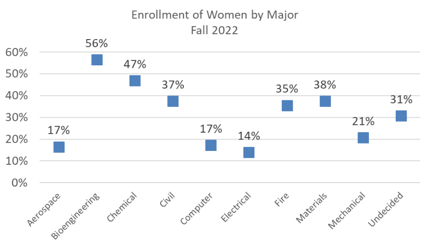
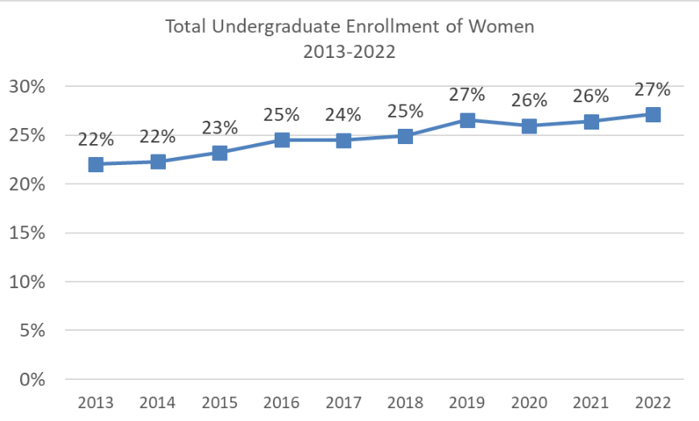
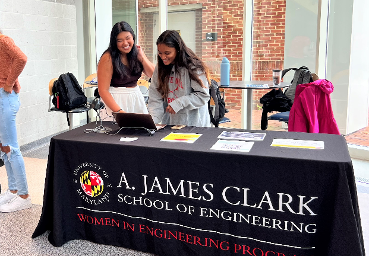
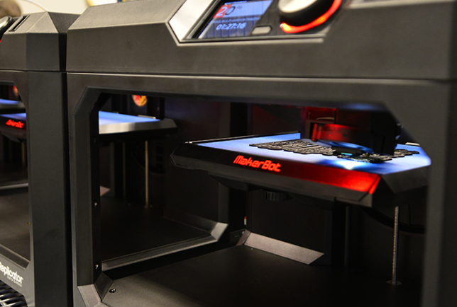
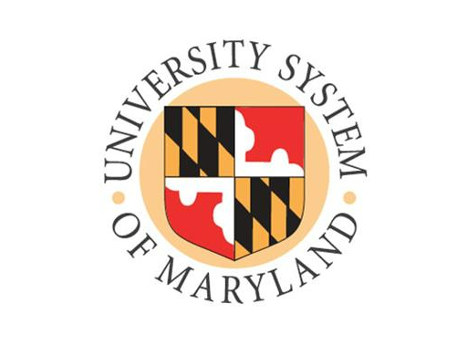
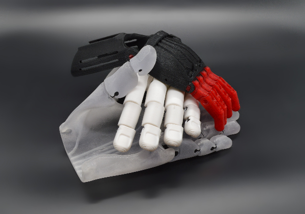

Rena's Story: 28 Years of Maryland's Women in Engineering makes strides in female recruitment
By: Angel Gingras
When Rena Surana-Nirula entered the University of Maryland in the fall of 1990 to pursue mechanical engineering, she was keeping the family tradition alive: her two older sisters had graduated from Maryland’s College of Engineering, known today as the A. James Clark School of Engineering. She would pursue this path for the next seven years, testing her strengths as a female minority of Indian heritage in courses dominated by men.
“I talked to a couple professors that knew my sisters and they were like, if they could do it, you can do it, so I just kind of did it.” said Nirula, reflecting on her decision to study engineering.
At that time, women made up less than 20% of the engineering cohort during Rena and her sisters’ undergraduate careers, according to the University System of Maryland’s online data tool IRIS. Out of eight engineering specializations, Rena and her sisters studied the two with the lowest female enrollment: aerospace and mechanical engineering.
“[In] undergrad, in the larger classes, it wasn’t as bad because it was all the engineering disciplines together, but as I got into the higher level mechanical classes, you realize that there are very, very few women,” said Nirula. “There were more in electrical and civil I want to say, but definitely not in mechanical.”
Still, Nirula enjoyed the program, owing her success to the friends she met in other disciplines and the bond she shared with her sisters at home. In spring 1995, she graduated with a B.S. in mechanical engineering.
That same year, the College of Engineering founded the Women in Engineering Program, an initiative to promote female involvement and equal opportunities in the engineering field. Unfortunately for Nirula, the program was aimed for undergraduates.
Meanwhile, she was going on to pursue Maryland’s engineering master’s program, where she had been recruited by a professor from a 400-level class.
“I was female, I was US-born and I had connections with the engineering research center,” said Nirula. “It was all kind of lined up and he even got all the funding, so I said alright, let's just go with it."

And that’s where things took a turn.
The engineering research center on campus, where Nirula had worked since sophomore year, was funding a rapid prototyping machine, a new technology at the time that uses equipment such as a 3D printer to create functional products. There were two professors in the department who could receive it, including her recruiting advisor.
“He recruited me heavily so that they would give him the machine, and they gave him the machine,” said Nirula. “And that became my work, so I was a pawn, essentially.
The next couple of years would be difficult for Nirula. As the only female in her cohort, all her work revolved around the specialized research of rapid prototyping. Her advisor made it clear that he didn’t support having a woman in his engineering program and didn’t give her credit for leading the project.
“I was a TA and a lot of my students saw what was happening, and they felt very wronged by it. So they went and reported it to the dean of mechanical engineering,” said Nirula. “Professors could literally hold you back as long as they wanted until you wrote the number of research papers that they wanted…and I was not to sabotage my own graduation…so I did not offer a lot of information on my end at that point.”
Nirula completed her graduate degree in mechanical engineering in the summer of 1997 and pursued the career for three years, until jobs in rapid prototyping were no longer available in this area. She now works as an event planner, while her sisters are pursuing engineering and medicine.
I think we all have to live our own stories. We kind of have to go through our own path, and I think that was mine.
“If I went to school today, I would have so many other options. I feel like I would know exactly what I want to do. But I think we all have to live our own stories. We kind of have to go through our own path, and I think that was mine,” said Nirula. “I use a lot of technical and logical thinking in my events, and that kind of gives me a different edge, so it's a good thing.”
Since then, the Clark School of Engineering has increased its number of specializations and population of women and other minorities. The number of women majoring in engineering has been on a steady increase since 2013, according to figures maintained by the Clark School, still the number of women enrolled in engineering sits at 27% as of Fall 2022.
“I wish there was more acceptance of females definitely at that time. I just feel like it would have made a different experience. I wish people would have recognized the things that were done wrong and actually took action,” said Nirula. “In retrospect, I should have spoken up to make it easier for other people, but I also saw no females behind me.”
Today, the Women in Engineering program is run by an advisory board made up of students in the undergraduate and graduate programs, and supported by female professors in the Clark School. They partner with a variety of organizations including Flexus, a two-year living-learning program for women majoring in engineering; the Society of Women Engineers; Graduate Women in Engineering; along with peer mentoring, tutoring, and summer internships.
Resources




WIE Partnerships
- Flexus: The Dr. Marilyn Berman Pollans Women in Engineering (WIE) Living and Learning Program
- Virtus Living and Learning Program
- Sheila Rohra WIE Connect Peer Mentoring Program
- WIE Summer Internship Program
- WIE Tutoring Services
- TerrapinWorks Technical Workshops
- Society of Women Engineers
- Graduate Women in Engineering